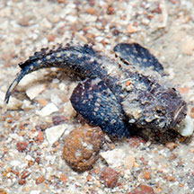
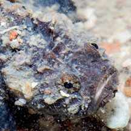

|
|
| fishes text index | photo index |
| Phylum Chordata > Subphylum Vertebrata > fishes |
| Stonefishes Family Synanceiidae updated Oct 2020 Where seen? These gruesome looking fishes can sting painfully. What are stonefishes? Stonefishes belong to Family Synanceiidae. According to FishBase: the family has 9 genera and 31 species. They are found in the Indo-Pacific oceans. They are sometimes classified as members of the Family Scorpaenidae. Features: Stonefishes do look like stones! The Hollow-cheek stonefish (Synanceia horrida) is commonly encountered on the the intertidal. The Reef stonefish (Synanceia verrucosa) has yet to be encountered during our intertidal surveys. It has a deep depression between the eyes and doesn't have hollow 'cheeks'. It is considered the most widespread stonefish found on sandy or coral rubble areas of reef flats, in shallow lagoons and tide pools during low tide. Sometimes mistaken for scorpionfishes. Here's more on how to tell apart fishes that look like stones. |
| Some Stonefishes on Singapore shores |
 Stargazer waspfish Trachicephalus uranoscopus Changi, Jun 12 |
 Photo shared by Marcus Ng on flickr. |
| Family
Synanceiidae recorded for Singapore from Wee Y.C. and Peter K. L. Ng. 1994. A First Look at Biodiversity in Singapore. **from WORMS
|
Links
References
|